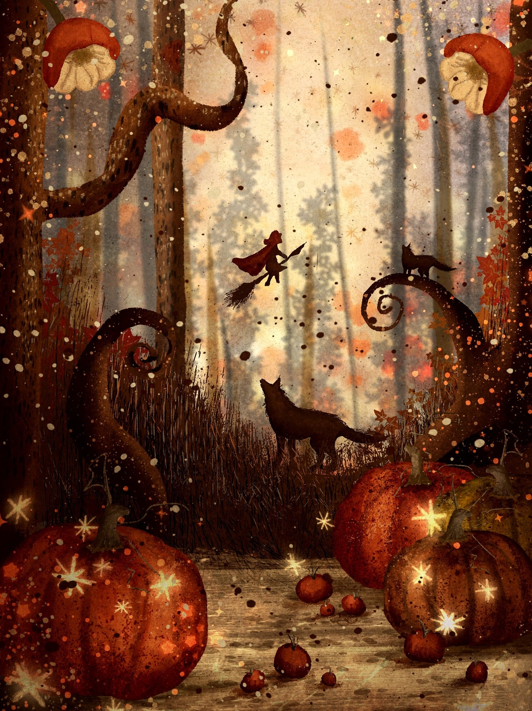

一份从万圣节森林插画里提取出来的配色与元素系统。三层层叠的景深、永不缺席的粒子、被逆光压成剪影的主体。用于视频与演示文稿。
一片暮色里的森林。背景是透过树干的暖雾，中间飘着骑扫帚的红斗篷、仰头嚎叫的狼、蹲在卷曲树枝上的影子；前景堆着三只南瓜，表面结着星芒状的霜。 整个画面漂着成千上万个光点——有圆的、有尖的、有橙的、有白的，像孢子也像火星。
这是童话式的危险：暖、好看、有魔法感，但底下藏着暗。它不是明快活泼的节日装饰，而是一张有空气、有距离、有体积的夜森插画。
光在背景，不在主体上。所以文字与图形不要「亮色描边、深色填充」的常规做法——要反过来：深色实心块 + 背景发光衬托。
前景暗、中景主体、背景发亮。这张画的空间感全来自这三层，而不是透视。版式上也照这三层来叠，这是本规范最核心的一条。
星芒与光点铺在每一屏上，包括数据页和列表页。粒子层是这套美术的签名，去掉它画面立刻变成普通的暗色主题。
边缘不做完美的直线与正圆，元素允许有 1–2° 的轻微倾斜和 ±2% 的形变。干净的数字感会毁掉童话调性。
整套只有暖色系（褐 / 橙 / 红 / 金），没有冷色。需要拉开层次时改明度，不要引入蓝绿。
十色，全部落在暖色带（色相 0° – 45°）。暗部承担面积，橙红是主体，蜜金只在光里出现。
#1C1008#2B1A12#3D2418#6B3E22#A9762F#D9B87A#E8D5A8#C2541F#C0392B#8E3418这套配色没有冷色，做层次一律靠明度。以下每色 5 阶，从左到右由亮到暗。
| 色族 | 阶梯（由亮至暗） |
|---|---|
| 褐色系 | #8A5A34 · #6B3E22 · #3D2418 · #2B1A12 · #1C1008 |
| 橙色系 | #E89B4E · #D4762E · #C2541F · #963D14 · #6B2A0D |
| 红色系 | #E0705F · #CE4A3A · #C0392B · #8E3418 · #5E2010 |
| 金色系 | #FFF3D6 · #E8D5A8 · #D9B87A · #A9762F · #7A5220 |
暗底上亮色在前，暖橙是主角。同一份材料里语义不能换。
| 语义 | 用色 | 说明 |
|---|---|---|
| 主序列 / 核心 | 南瓜橙 | 被讨论的那一条，面积最大 |
| 关键值 / 峰值 | 蜜金 | 只标最高点或结论点，配星芒 |
| 强调 / 告警 | 朱砂红 | 需要被立刻看到的那一项，≤10% |
| 对照 / 次级 | 赭棕 | 参考线、同期、弱化序列 |
| 基准 / 网格 | 焦棕 | 坐标轴、网格、面积底 |
| 负向 / 下降 | 暗赭红 | 用描边或斜纹而非实心，避免与朱砂红混淆 |
底 #1C1008 或 #2B1A12，文字 #F0E2C8（对比 12.6:1）。童话调性必须落在暗底上，亮底会立刻变成节日海报。
用径向光做底：radial-gradient(ellipse, #9A5A28, #5A3319 34%, #2B1A12 68%)。这是最能代表原画的一层——光从画面中心后方透出来。
图片上叠 55% 墨夜蒙版，文字用星芒白或蜜金。这张原画本身对比已经很强，蒙版要够重。
底 #E8D5A8，文字 #3D2418，强调改用 #C2541F 与 #8E3418。蜜金在浅底上会消失，别用。
| 规则 | 做法 |
|---|---|
| 不引入冷色 | 整套色相全部落在 0° – 45°。需要「对比色」时用明度极端值（星芒白 vs 墨夜），而不是换成蓝绿紫。 |
| 朱砂红 ≤10% | 红是「危险」信号，只给蘑菇、斗篷、告警这类主角。铺开就失去了警示力，也压不住画面。 |
| 橙色阴影用暗赭红 | 橙色块的暗部用 #8E3418 而不是加黑。#000 会把暖橙调成脏土色。 |
| 不用纯黑纯白 | 最暗 #1C1008，最亮 #FFF3D6。纯黑会吃掉树干的褐，纯白会让星光显得刺眼。 |
| 金色只出现在光里 | 蜜金代表「被光照到」，只给标题、关键数字、星芒。给整块背景涂金就破坏了逆光逻辑。 |
| 相邻暖色要拉开明度 | 橙与红相接时，两者明度差至少 18%，或中间垫 1px 蜜金细线，否则会糊成一团。 |
| 用途 | 最低对比 | 检查方式 |
|---|---|---|
| 正文 | 4.5 : 1 | 雾米在树皮褐上只有 5.2:1，勉强可用；#8A7258 只能做注解 |
| 大标题 | 3 : 1 | 朱砂红在墨夜上约 4.1:1，可做大标题，不可做正文 |
| 关键信息 | — | 红色必须同时配星芒、形状或标签，不能单靠颜色 |
中文 思源宋体 / 方正清刻本悦宋 / 宋体；英文 EB Garamond / Cormorant / Georgia。衬线的笔锋与手绘插画的质感同源，是本套的默认选择。
中文 思源黑体 / 苹方；英文 Inter / Lato。正文不要用衬线——矮胖的宋体在暗底上小字号会糊，可读性明显低于无衬线。
极短的金句可以用手写体（英文 Caveat / 中文 站酷快乐体）增加童话感。仅限一句话，正文与数据一律不用。
等宽或半等宽数字，字重比正文高一档。这套调性的数字是「被光照亮的石碑」，太细会显得虚弱。
| 层级 | 字号 | 字重 | 字距 | 行距 |
|---|---|---|---|---|
| 主标题 Display | 100 – 150 px | 400 衬线 | +5% | 1.16 |
| 章节标题 H1 | 60 – 76 px | 400 衬线 | +5% | 1.25 |
| 二级标题 H2 | 38 – 46 px | 600 无衬线 | +2% | 1.35 |
| 正文 Body | 26 – 30 px | 400 无衬线 | +1% | 1.80 |
| 数据数字 Metric | 120 – 200 px | 600 等宽 | 0 | 1.05 |
| 注解 Caption | 18 – 20 px | 400 无衬线 | +6% | 1.60 |
| 衬线只给标题 | 标题用衬线、正文用无衬线，两者不混用在同一层级里。一套里衬线出现的地方不超过三处。 |
| 字距略宽 | 标题加 5%、正文加 1%、注解加 6%。童话感有一部分来自「慢一点、松一点」的字距。 |
| 行长偏短 | 一行中文最多 18 字。这张画很密，文字再密就没有呼吸的缝隙。 |
| 文字不叠在粒子上 | 正文所在区域要把粒子层压到 30% 以下，或用一块 rgba(28,16,8,.6) 的底板托住。 |
| 居中可用但不滥用 | 封面、金句、单数字居中；说明性内容一律左对齐。整套里居中不超过三分之一。 |
这张画的空间感不是靠透视做出来的，而是靠三层明度：背景最亮（雾光）、中景最清晰（狼、女巫）、前景最暗（南瓜、草）。版式照这三层叠，空间自然就出来了。
| 层 | 明度 | 放什么 |
|---|---|---|
| 背景层 Backdrop | 最亮 | 雾光底、树影、大块径向光。占画面 100%，但整体透明度低、模糊 8–20px。不承载信息。 |
| 中景层 Middle | 中调 | 所有要读的内容：标题、正文、图表、数字。这一层必须清晰、无模糊。 |
| 前景层 Foreground | 最暗 | 粒子、星芒、装饰性的草与枝。压在内容之上，用 pointer-events:none，透明度 40–70%。 |
三层缺任何一层都会塌：只有背景+中景会显得平；只有背影+前景会读不清；前景太重会盖住内容。
列间距为列宽 1/3，外边距 = 画面宽度的 8%。1920 宽下左右各留 154px。
所有垂直间距是 8 的倍数：8 / 16 / 24 / 40 / 64 / 96。装饰元素可以越界，内容元素不可以。
| 画幅 | 规则 |
|---|---|
| 16:9（视频/PPT） | 安全区 84% × 84%。径向雾光的圆心固定在画面 50% / 62% 处，跨页不移动——它是这套版式的「光源」，动了就乱。内容压在上方 2/3。 |
| 9:16（竖屏） | 上 18% 与下 8% 留给平台 UI。光源圆心上移到 50% / 40%。核心信息放纵向 30% – 75%。 |
| 前景压边 | 每页底部保留 12–16% 的暗色前景带（剪影或渐变到墨夜），让人有「站在林子里往里看」的位置感。 |
留白不是空的，是被雾光填的。空白区域放径向渐变而不是纯色，留白才有体积。
卡片 16px、小元素 8px、标签全圆。手绘调性用大圆角柔和，但不要像「有机体」那样极致。
金色元素周围加 0 0 32px rgba(217,184,122,.22)。深底上发光比投影重要得多。
整页叠 5%–7% 的颗粒（比一般规范重），模拟纸面与颜料。视频里用静态噪点，不要逐帧闪。
所有图形元素从这六个母题里来。这张画的装饰语汇极其统一，所以复刻它的关键不在色值，而在形状。
| 颗粒 | 整页 5% – 7% 噪点，比常规重。这是颜料与纸面的质感，不是瑕疵。 |
| 边缘不完美 | 形状允许 1–2° 的倾斜与 ±2% 的比例形变。正圆、正方的完美几何要刻意避开。 |
| 三级模糊 | 背景层模糊 8–20px、中景层 0、前景粒子 0–2px。景深靠模糊差建立。 |
| 叠加而非纯色 | 色块之间用 multiply / overlay 的叠加感，交界处颜色互渗，不要硬边。 |
| 图标 | 线性 stroke 2px，允许手绘感的不均匀线宽；或直接用剪影块。避免规整的几何图标。 |
这套调性的动效重点是粒子层的持续漂浮和光的呼吸，而不是元素入场。整页永远有一层东西在动，像空气里有孢子。
| 用途 | 动作 | 时长 | 缓动 |
|---|---|---|---|
| 粒子漂浮 | 每个光点独立上下漂移 10–24px + 淡入淡出，无限循环 | 6 – 14 s | ease-in-out |
| 星芒闪烁 | 透明度 0.4 → 1 → 0.4，不规则间隔 | 2.5 – 5 s | ease-in-out |
| 雾光呼吸 | 背景径向光整体缩放 1.00 → 1.04 | 12 – 18 s | ease-in-out |
| 元素入场 | 从暗到亮（透明度 0 → 1）+ 上移 12px | 600 – 900 ms | cubic-bezier(.34,1.2,.64,1) |
| 强调 | 星芒从 0 放大到 1.3 后回落到 1 | 500 ms | cubic-bezier(.34,1.4,.64,1) |
| 章节转场 | 粒子密度骤增并加速向上掠过，露出下一幕 | 900 ms | ease-in-out |
| 入场像被照亮 | 元素不是「滑进来」，而是从暗处亮起来——透明度从 0 升到 1，位置只动 12px。这呼应逆光逻辑。 |
| 粒子独立相位 | 每个光点的动画延迟随机（0–8s），绝不能整齐划一地一起闪——同步就是数字感。 |
| 闪要有节制 | 同一屏里同时闪烁的星芒不超过 3 个，且各自节奏不同。满屏闪烁会变成跑马灯。 |
| 光在动，景不动 | 雾光层缓慢呼吸，内容层基本静止。不要给文字或图表加持续动效。 |
| 缓动带一点回弹 | 入场与强调允许轻微过冲（1.2 倍贝塞尔），这是手绘感的来源。但只在入场用，出场保持干净。 |
这套规范的原型是一张插画而不是照片，所以多了两条照片类规范里没有的自由度：可以使用具象图形（南瓜、狼、星芒），也可以让元素越出边界。同时它也多两条约束——不能保持照片级的真实细节，也不能离开这套装饰语汇。
所有插图元素必须来自第 06 节的六个母题，且用同一套色板。混入图库里的扁平插画会立刻露馅。
南瓜表示占比、树干表示分组、卷须表示流程。具象图形承担图示功能是这张画给的红利，别浪费。
外部照片上叠 55% 墨夜蒙版，并把色温整体调暖（+12）。冷调照片放进这套配色里会格格不入。
曝光 -0.25、对比 +14、高光 -10、阴影 -12、色温 +12（偏暖）、橙色饱和 +10、去饱和蓝色 -30。
正文区块加一层 rgba(28,16,8,.6) 的暗底或雾光衬底，把粒子隔开，否则读不清。
满版铺图可用到总页数 1/3，但每页必须保留底部 12–16% 的暗色前景带，维持空间位置感。
直接粘进 HTML / 视频工程的样式表，命名与前面的色卡一一对应。
/* BetiDraws · 暮林星火 · v1 */ :root { /* 暗色系 · 50% 面积 */ --ink: #1C1008; /* 墨夜 · 最深底/剪影 */ --bark: #2B1A12; /* 树皮褐 · 默认画布 */ --umber: #3D2418; /* 焦棕 · 中间调 */ --sienna: #6B3E22; /* 赭棕 · 过渡/次级 */ /* 暖色系 · 27% 面积 */ --pumpkin: #C2541F; /* 南瓜橙 · 主色 */ --vermilion: #C0392B; /* 朱砂红 · 强调 ≤10% */ --rust: #8E3418; /* 暗赭红 · 橙色的阴影 */ /* 金色系 · 18% 面积 */ --ochre: #A9762F; /* 赭金 · 装饰线 */ --honey: #D9B87A; /* 蜜金 · 主强调/星芒 */ --mist: #E8D5A8; /* 雾米 · 背景雾光 */ --star: #FFF3D6; /* 星芒白 · 最高光/粒子 */ /* 文字 */ --txt: #F0E2C8; --txt-2: #B9A183; --txt-3: #8A7258; /* 画布与景深 */ --fog-glow: radial-gradient(ellipse at 50% 62%, #9A5A28, #5A3319 34%, #2B1A12 68%, #1C1008); --blur-back: 14px; /* 背景层模糊 */ --veil: rgba(28,16,8,.6); /* 文字底板 */ --grain: .06; /* 颗粒比常规重 */ --particle-op: .55; /* 粒子层不透明度 */ /* 形状 */ --radius-card: 16px; --radius-sm: 8px; --radius-pill: 999px; --glow: 0 0 32px rgba(217,184,122,.22); --tilt: 1.5deg; /* 手绘倾斜上限 */ /* 字体 */ --font-title: "Songti SC", Georgia, serif; --font-body: "PingFang SC", "Source Han Sans SC", sans-serif; /* 节奏 */ --ease-lit: cubic-bezier(.34,1.2,.64,1); --t-in: 800ms; --t-float: 9s; /* 粒子漂浮 */ --t-breath: 15s; /* 雾光呼吸 */ }
四个典型版式，可直接当模板用。